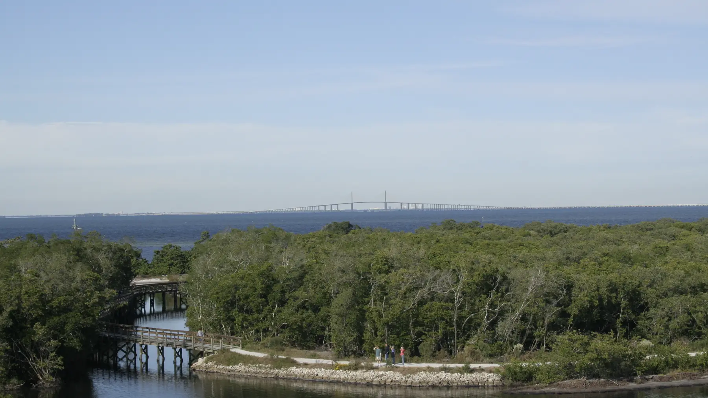

The Islands and the Coast
Perico Island and Harbour Isle
Manatee County, Florida
Photo Mark Hewitt, via Wikimedia Commons · Creative Commons Attribution ShareAlike 3.0
Perico Island sits on Manatee Avenue between west Bradenton and the Anna Maria Island bridge, surrounded by Anna Maria Sound and Palma Sola Bay. Almost all of it was developed as planned communities rather than as a conventional street grid.
Harbour Isle is the largest of these, a waterfront community of coach homes and condominiums with a marina and a beach club. The result is island adjacent living with newer construction and association maintained exteriors.
- To the Beach
- About 5 to 10 minutes
- Typical Range
- [[FILL IN: pull from Stellar MLS]]
- What Was Built Here
- Resort style condominiums, coach homes, villas, townhomes
The Details
What defines Perico Island and Harbour Isle.
- Harbour Isle, One Particular Harbour, and the Perico Bay Club communities
- A marina with Gulf access through Anna Maria Sound
- Newer construction, most of it built after 2000
- Association maintained exteriors and grounds across most of the island
- Robinson Preserve and Neal Preserve immediately adjacent
Questions
What people ask me about Perico Island and Harbour Isle.
What do the association dues cover here?
It varies by community, but on Perico Island they commonly include exterior maintenance, grounds, amenity access, and in some cases roof and insurance on the building shell. That makes a direct comparison to a single family home misleading unless you account for what you would otherwise pay separately. I break that out when we compare options.
Is this a good option for part time residents?
It is one of the more practical ones in the county, because exterior maintenance and landscaping are handled and the communities are gated. That said, rental minimums vary by community and need to be checked if you intend to rent when you are away.
How close is it really to the beach?
Perico Island sits between west Bradenton and the island itself, so the Anna Maria Island bridge is minutes away and Manatee Public Beach is a short drive beyond it. Traffic on Manatee Avenue in high season is the variable, not the distance.
Nearby